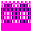

| Discarded stuff |  Wrong Way Wrong Way |
 THE BOARD THE BOARD |
|---|
Here are a handful of screenshots for a fanpasta I wanted to do before wrong way, mid 2019.
Oh, well, first we have this narrative in loquendo of that year called “one more game”. I will leave below a transcription in English.
(To be honest, I didn't remember writing this).
|
Well, hello everyone, my name is Daniel and I've always been a big fan of the paranormal.
I'm familiar with many paranormal stories and like many others I came across stories about a NES Godzilla game. And despite not being a connoisseur of the Godzilla universe, this story fascinated me to the point that I ended up buying the damn cartridge. I decided to prepare myself properly while waiting for the shipment, so I basically played the original game and got to watch several of the movies so I could identify all sorts of details from the game. Now after so much waiting, I finally have it in my hands, the damned cartridge despite not differing from a normal cartridge, has something. Without further delay I prepare everything I need to take screenshots of the game and put the cartridge in my nes. |
|
The best way to present the captures I suppose would be in order. The world was called “BEGINNING”... Yeah, I know, super original. Apart from GODZILLA and MOTHRA, GEZORA would also be playable, though only for a while. |
 |
|
The type of level that is almost all over the board is called “PRIMARY”. Entering one either takes you to a screen of the original game or to a screen of the original game |
 |
|---|
|
Or a completely empty level. |
 |
| There wasn't much focus on the levels, my priority at the time was boss fights, I wanted a loooooooooot of fights. You may also have noticed that the GODZILLA and MOTHRA sprites are not the original ones, these versions were made by Zillagamer, along with the Gezora sprites we'll see now. |
|
Speaking of bosses, here is GEZORA's fight against ANGUIRUS, click to switch images! |
| I guess GEZORA could never stop being related to glitches. |
|
After that, they both freeze, ending GEZORA's stellar appearance. |
 |
|
Now it's time for GODZILLA vs.... AQUARIOUS? It's an OC by HardCoreCrocomire and WeegeeDude, I found it at the time while I was looking for sprites and I liked it. Click to change image! |
|
And, to end with the normal Kaijus fights... MOTHRA AGAINST KUMONGA! I distinctly remember how I started to lose interest with this fight. Click to change image! |
|
Moving on to something more interesting; here's the second type of level! This is what I ended up liking the most from these old screenshots, nothing particularly unique, but I like the result. I based it on the glithced level from The Earth of Replay. The flying fetus in the 3rd screenshot was a mini-boss that represented one of the “cores” of the cartridge. One idea I had for the story was that the protagonist would progress through the game destroying these “cores”, which were like essential elements for the cartridge to work, ending the story with the cartridge completely broken. Click to change image! |
|
Here is the last version of the board I got to make, here there would also be a fight against LETHAR and one against ZILLA and VARAN at the same time (I don't remember if it was 1 vs 2 or 2 vs 2). Oh and if you wonder what that inverted colored base is... I never thought it would be, I just had in mind that it would become accessible when defeating all the bosses. |
|
I never got to do the VARAN and ZILLA fight, but I did do a LETHAR fight! (against SOLOMON for no reason, surely I would have come up with something to spin the whole thing). The important thing here is that, apart from being the very first screenshots I got to do, I ended up using the idea of the end of this battle for Wrong Way, it just seemed like a good idea to reuse. Click to change image! |
|
Well, to finish, there is this screenshot that I have clear the memory that I did it with MS Paint for some reason (the rest of these and of the screenshots that I have done in Wrong Way I have done them in Paint.net). It was one of the last I did, with the Glitch level, I didn't have an idea beforehand, I just edited the screenshot of the fight against TITANOSAURUS from the original story. There's no context worth here, beyond a spooky godzilla, then I came up with the idea of a story where the player would make Godzilla more powerful after passing each world, until it will attack the player in some way; I know, cliché, although it could have worked by mixing it with the idea of the “cores”, giving a sense of urgency to destroy the game before the game destroys you. Click to change image! |
{kind=link}
{kind=link}